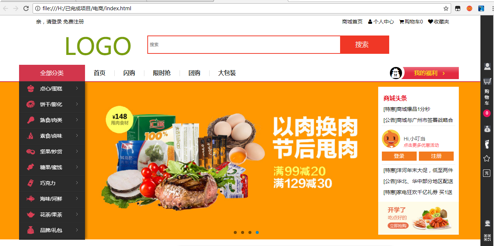
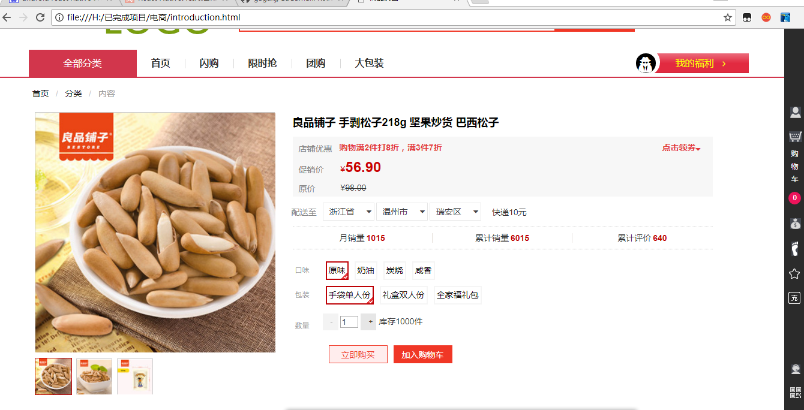
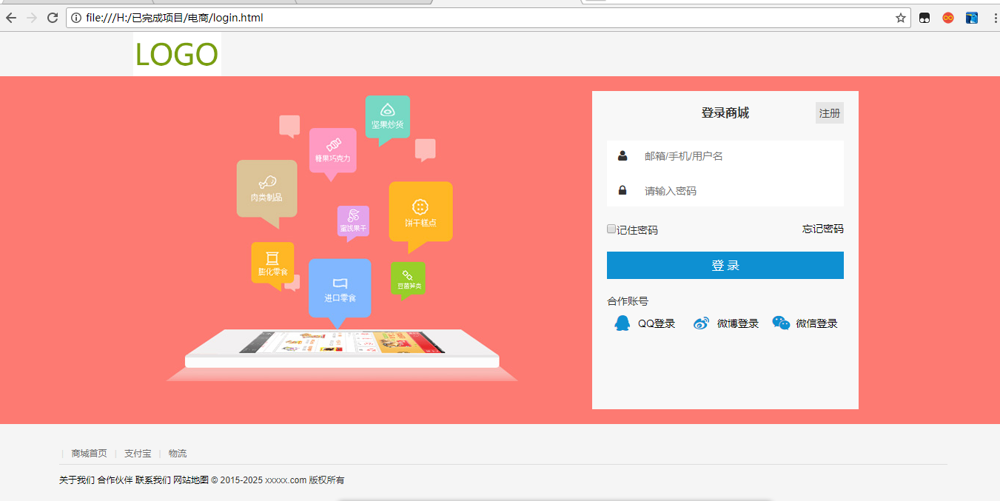
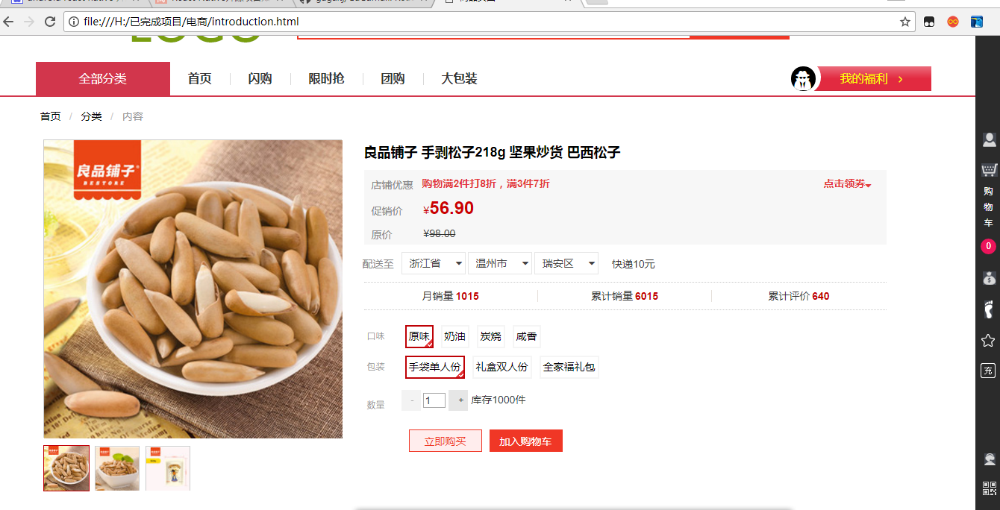
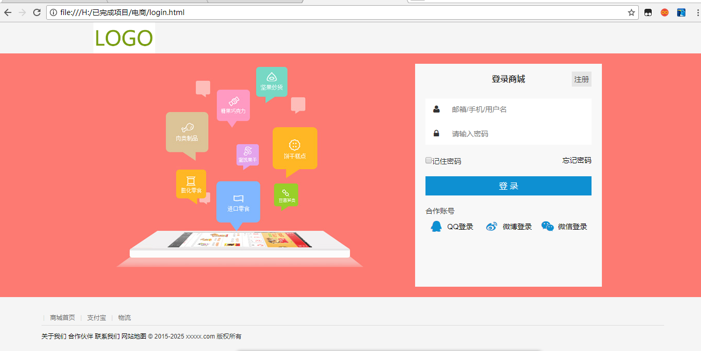
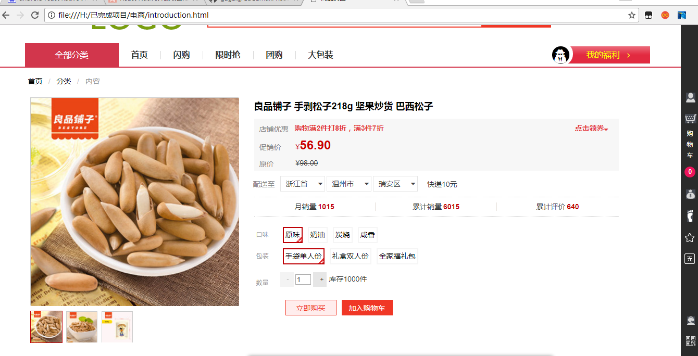
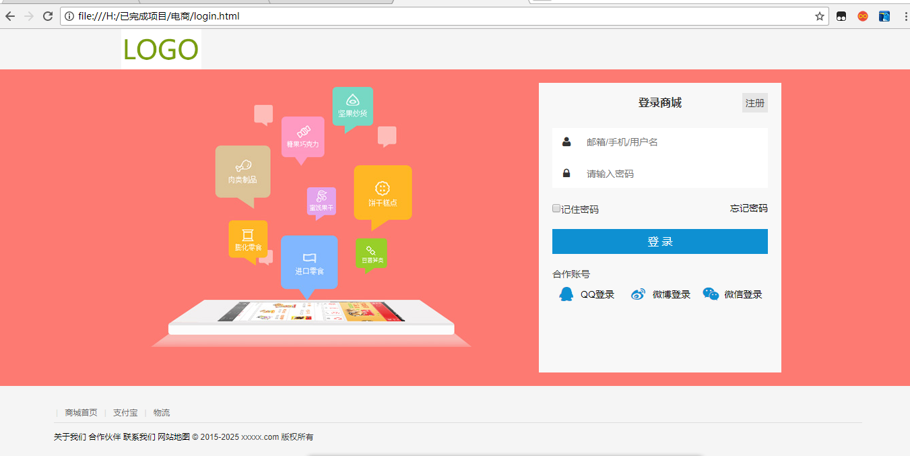

毕业学校：武夷学院
专业：微电子科学与工程
- 项目一 食品选购商城（PC端）
- 开发环境：sublime + javaScript+html+css+jQuery等
- 独立开发完成
- 访问地址：https://linjiajiang.github.io/webshopping/index.html
- 项目描述
- 1.该网页拥有导航栏，登陆注册中间轮播图播放，今日推荐，今日活动，各商品展示
- 2.主页上对各部分加上动画效果，轮播图自动无限轮播，触摸各商品时有动画效果
- 3.点击登陆、注册、商品时，即跳转到指定页面，
- 4.触碰全部商品，即会显示该类别的详情内容
- 5.在登陆页面与注册页面相互跳转
- 6.商品详情页中，可对商品进行放大查看，选择需要的商品口味，包装等
- 7.可查看商品详情中的介绍，评论，推荐等
- 技术要点：
- 1.主页上使用DIV+CSS的方式搭建布局
- 2.全部分类中，使用jQuery框架+原生JS实现触摸时，显示对应内容
- 3.轮播图使用了jQuery框架中的animate方法，使其在一定时间间隔中自动切换，触摸时停止
- 4.今日推荐及各类商品展示中，使用jQuery中的animate方法，触摸时使图片发生移动，离开后返回原位
- 5.跳转方面使用a标签的属性src加上指定页面，使其进行跳转
- 项目二 ：欧汇商城
- 开发环境: webstorm2017 + React Native
- 独立开发完成
- 项目描述：
- 1. 该软件拥有首页内容展示，商品搜索，用户登录账号管理，系统设置等页面
- 2. 首页上对各种商品进行展示及推荐
- 3. 搜索页可搜索想要的商品及当前热门信息推荐
- 4. 用户界面可充值钱包，付款管理，物流追踪，商品评价，积分换取等
- 5. 设置页面可获取帮助，问题解决，省流量设置，设置消息提醒
- 技术要点：
- 1.主页面上使用TabNavigator加html,css完成主页下面的主页，搜索，我的，更多的设置
- 2.使用ScllView和ListView的相互嵌套方式，搭建主页上类别选择，今日热点，商品推荐，商品推荐
- 3.同样使用ScllView和ListView的相互嵌套方式加上数据请求url去获得服务器里的数据更新同步
- 4.使用ListView加html css搭建我的以及更多的页面
- 5.在每个可点击处使用TouchableOpacity实现点击效果，加上Navigator去实现页面跳转功能
- 项目三 淘手机（微信小程序）
- 开发环境：微信小程序开发工具 独立完成
- 项目描述：
- 1.该小程序底部有首页，分类，晒单，个人选项按钮
- 2.首页上方各类别的选项按钮，点击可切换到不同页面，显示内容
- 3.在推荐页，先是一个不断播放的轮播图，再来是今日推荐商品
- 4.点击首页上方各商品，即显示该类中的商品及最低价格
- 5.分类中对商品类别进行分类，每类中列举出详细商品，点击商品即跳转到购买页
- 6.个人中心中可查看物流，收货地址，设置等
- 技术要点：
- 1.底部按钮使用了tabBar属性去构建，使用pagePath使其点击显示指定页面
- 2.首页顶部使用view去搭建，使用获取id的方式，使其可现实不同页面
- 3.使用了swiper标签，加上自身indicator-dots、autoplay、circular属性，使其出现小圆点，自动播放，无缝衔接
- 4.今日推荐使用wx:for这个API加上scrollview以及navigator构建出商品类别，并实现点击跳转
- 5.在使用navigator实现跳转时，传递参数，使其能确定商品
- 6.数据请求上使用wx:request这个API去请求数据
技能
- 熟悉W3C标准，Web语义化等有深刻理解。
- 深入理解JavaScript面向对象原理、熟悉相关的设计模式。
- 理解AJAX运作机制，熟悉掌握JQuery，Bootstrap等主流JS框架。
- 掌握DIV+CSS页面架构和布局方式，能够熟练应用HTML/CSS/JavaScript技术，开发符合W3C标准的网站前端页面。
- 对主流浏览器的兼容性有一定了解
- 对HTML5，CSS3有一定的了解。
- 能够独立开发微信小程序 掌握React 、React Native，能够熟练使用，对Angular有一定了解。
- 对后端数据库Node.js mysql Ionic 有一定程度的了解
自我评价
我对自己的定位: 主攻前端,同时在其他方面打打辅助。我不希望过于依赖别人,即使没有后端没 有设 计没有产品经理,我依然想要把这个产品做到完美。毕竟全栈才能最高效地解决问题。 我 怎样克服困难: 不用百度是第一原则,在遇到技术问题时我往往会去Google、Stack over flow 上寻找答案。但通常很 多问题 并不一定已经被人解决,所以熟练地阅读源码、在手册、规范自 己做才是最终解决问题的办法。相信事实的结果, 自己动手去做

 




